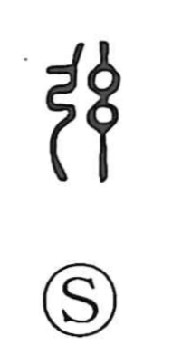

弦

Uncategorized
Kun: tsuru | On: gen
bowstring ・ string (of an instrument)
Explanation
A phono-semantic character: the bow radical evokes a bow, while 玄 functions as the phonetic, giving the On reading gen and suggesting the idea of a taut string. Accordingly, 弦 first names the string of a bow and, by extension, the strings of musical instruments—hence 弦楽器, often also written 絃楽器 with 絃 (“string,” thread + 玄). In practice, the On reading and sense of 弦 can stand in for 絃. The straight, drawn line of a bowstring also inspires uses like 弦月 for the crescent or half-moon, whose shape recalls a bow and its string (yumiharizuki).